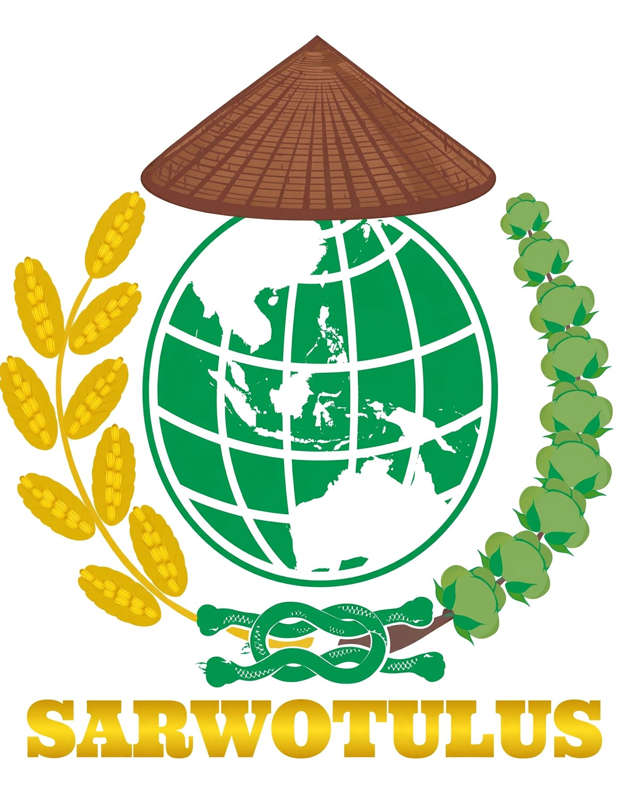
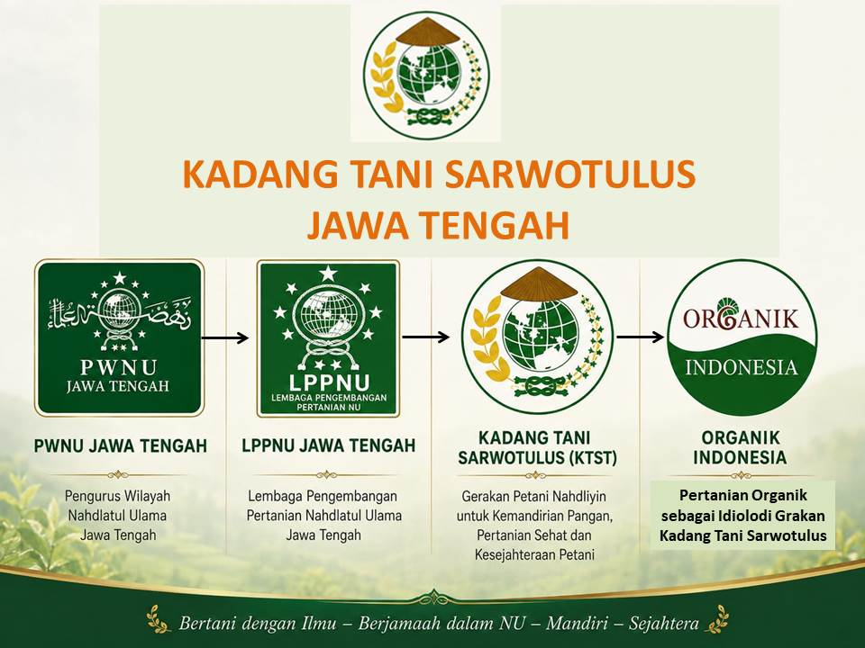

Lahir 22 November 2020 di Madin Miftahul Huda Manggisan Limpung Batang dalam Halaqoh dan Ngopi Bareng LPP PWNU bersama PWNU Jawa Tengah, dihadiri Pengurus PWNU Jawa Tengah, LPP PWNU Jawa Tengah, dan LPP PCNU se-Jawa Tengah kurang lebih 70 orang. KTST adalah wadah kemandirian petani NU di ranting NU, kelompok kerja akar rumput produksi pangan penjaga kesehatan tanah, tanaman, buah untuk kesehatan manusia dan bumi. Bertani organik yang rahmatan lil alamin. Setiap benih adalah amanah, merawat tanaman menjaga kelestarian alam, setiap panen adalah ibadah. Bertani dengan Ilmu - Berjamaah dalam NU - Mandiri - Sejahtera.